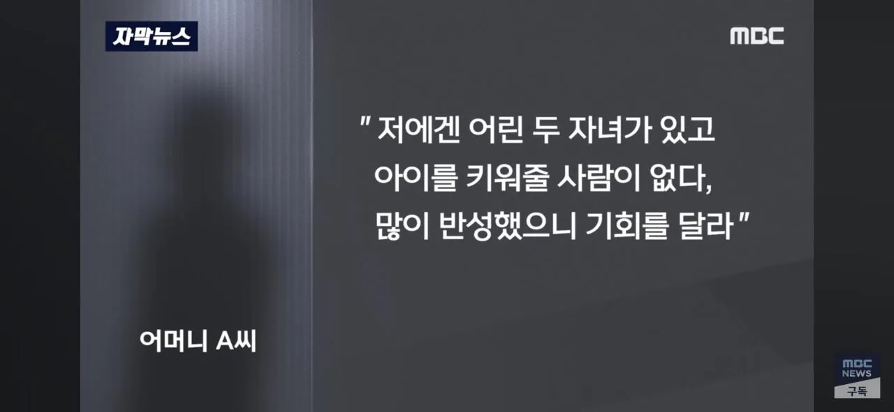
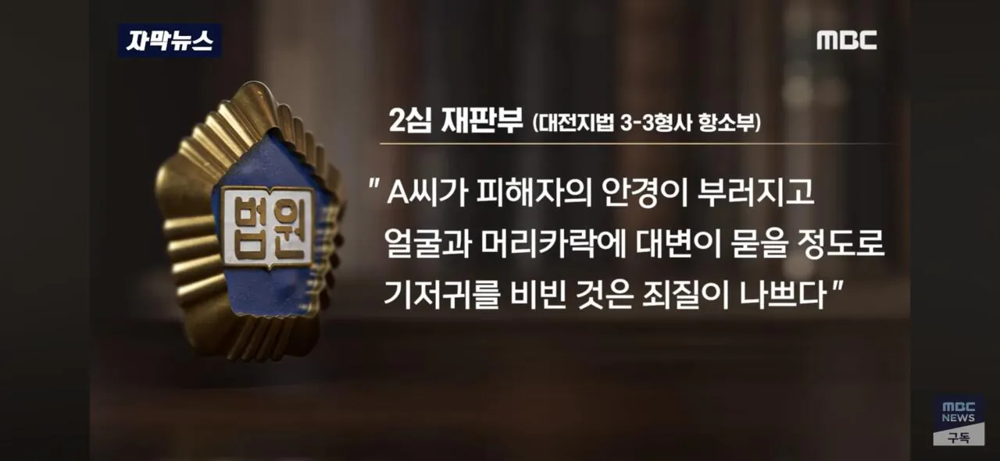

2심 징역 6개월이라함


2심 징역 6개월이라함
이건 경종이 필요한 사안이라 잘 판단한듯
좆같은 일이긴한데 동탁 빼고도 민사 합의로 3500만원 줬는데 실형이 뜬 건 신기하네
합의 아니고 교사측에서 손배소건거고 민사법원에서 3500쯤 받는게 어떠냐고 권고한거임 그래서 형사재판에서도 3500배상한게 피해구제를위한 노력의 일환이라고 안본거고
ㅇㅎ 민사법원까지 가서 화해한 거는 형사에서 안 쳐주는구나 몰랐네
형사에서 합의 받는 금액이랑 민사는 별도임. 형사에서 합의를 해도 민사는 별도로 돈을 받을 수 있음. 그러니 저 사람은 피해구제를 위한 노력을 하지 않은 상태인거임.
동탁은머임
미안 공탁 오타야

판사님 나이스샷!
최소 짧게 1달이라도 깜빵에 보내야 버릇고치지 어디 사람 얼굴에다 똥칠을
저런 씨발련도 애낳고 사네
반성하면 봐줄지 알았어? ㅋㅋ
유치장이라도 넣어놔야하는데
아이 볼 낯이 없겠네요~
본보기라도 쎄게 처벌해서 교사분들이 저런일 안당하게..
그냥 던진 것만 아니라 그걸 또 비빔??
그냥 던진 걸로 끝난게 아니라 얼굴에 비볐다고?